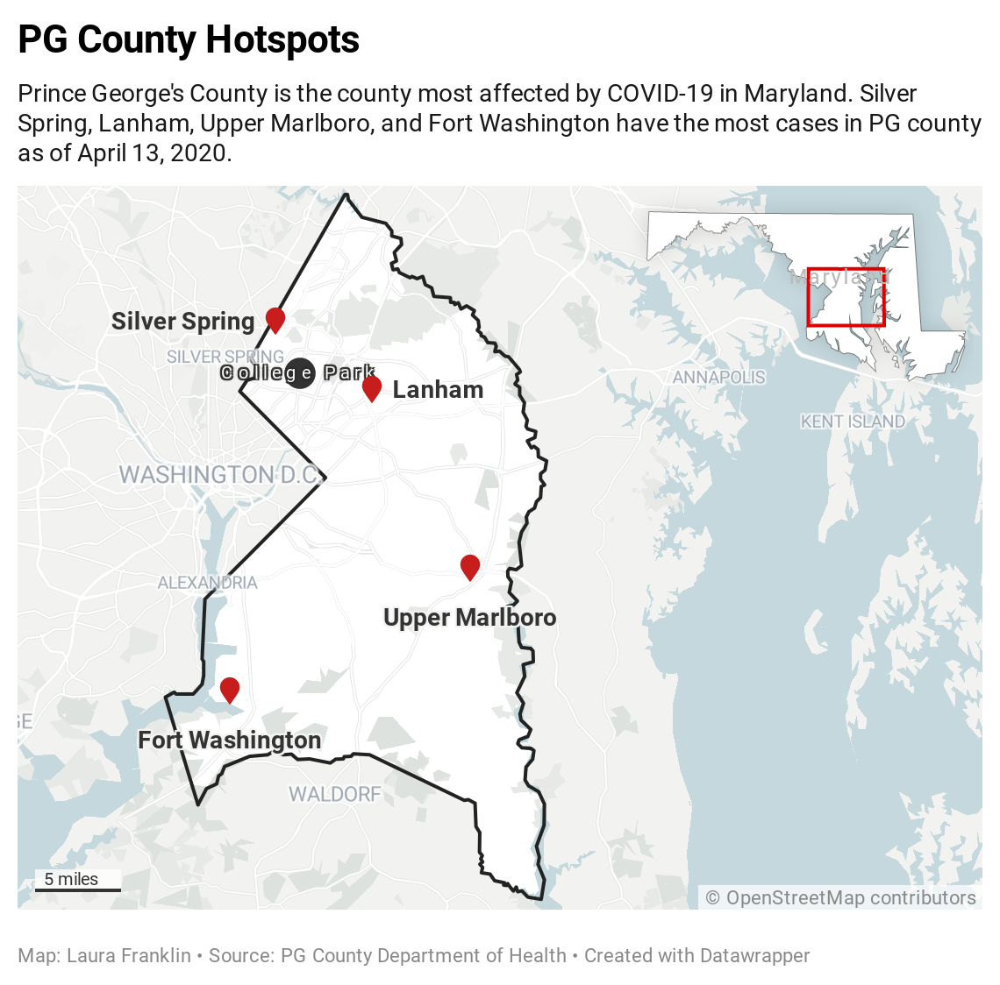

Non-essential business closures, stay at home orders, and mandatory facial coverings in public places were enforced across the country in response to the global COVID-19 pandemic. In Prince George’s County, Maryland, authorities prepared for the worst when the White House declared that the greater Baltimore-Washington area became an emerging hotspot for COVID-19.
Prince George’s County leads with the largest number of cases of the novel coronavirus in Maryland. As of April 21, there have been 3,868 confirmed cases of COVID-19 and 141 deaths in Prince George’s County according to Prince George’s County Department of Health.

“This virus continues to spread in every single jurisdiction in the state, but the concentration of Maryland cases has rapidly intensified particularly in the Baltimore-Washington corridor,” said Maryland Gov. Larry Hogan in a press conference on March 12, 2020.
People with predisposing health conditions are more at risk to severe illness. The virus is indiscriminate, it affects anyone that is exposed. However, these predisposing health problems disproportionally affect people of color and those who are impoverished. The population of Prince George’s County is composed of 62.23% African Americans.
“That means our county - with its rich diversity, well-established African-American neighborhoods, and vibrant immigrant neighborhoods - is at higher-risk for difficult or negative outcomes from this virus,” Prince George’s County Executive Angela Alsobrooks said in a press release on April 10, 2020.
In Prince George’s County, 15.2% of adults are unable to afford to see a doctor, according to the county’s data. The CDC recommends people to contact their doctor if they are experiencing symptoms such as shortness of breath, pressure or pain in the chest area, or bluish lips or face. For those without access to a medical doctor, it may be difficult for them to detect the virus before the symptoms become severe.
In response to this fear, the Prince George’s County Department of Health opened a free coronavirus-testing facility at FedEx field in Landover, Maryland. The testing facility operates on an appointment-made basis, and is meant to alleviate the pressure on hospitals and primary care physicians caused by overcrowding of hospitals.
Prince George’s county officials are taking precautionary measures to ensure the safety of its citizens. $15 million in grant funds were allocated to supporting small businesses and nonprofits that have been affected by nonessential business closures. The county also required facial coverings in public establishments on April 15 to reduce the transmission of the virus.
Alsobrooks continues to update the community on measures that have been taken to deal with the outbreak. “While there are tough times still ahead of us,” Alsobrook said in a press release, “I promise that we will get through this crisis together.”